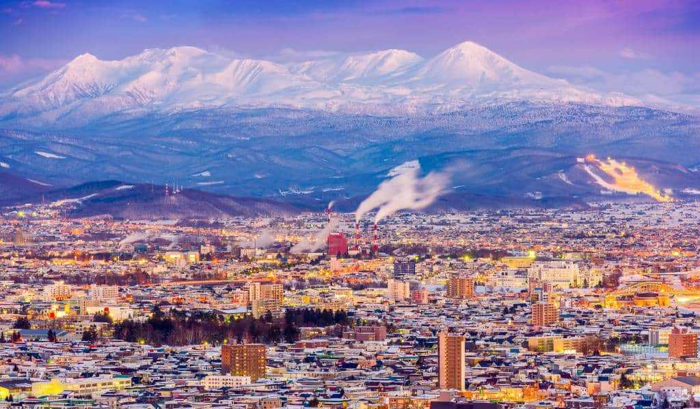
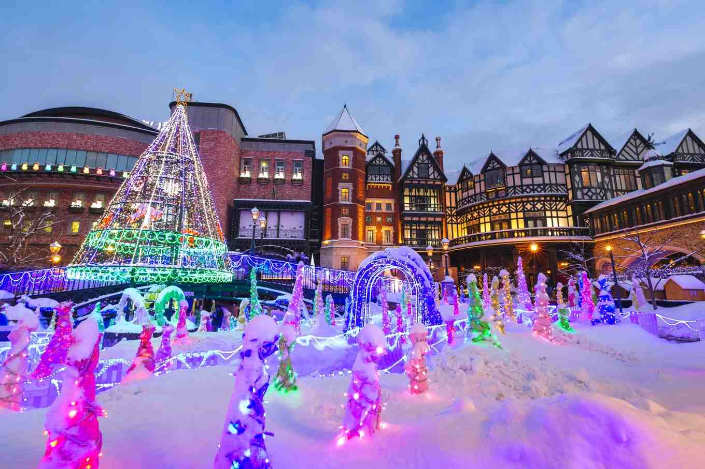
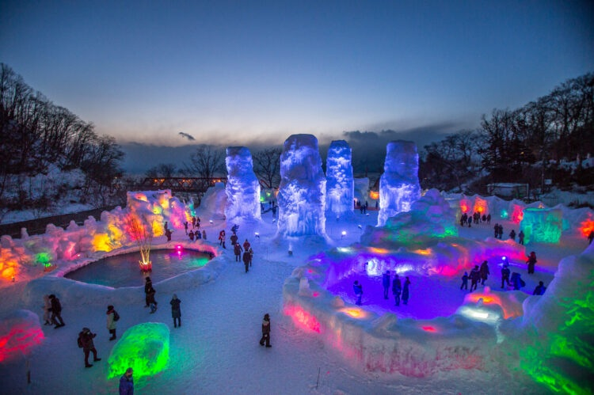

Cool Spots and Hot Springs of Hokkaido

Japan is on just about every persons' travel list, but many are often unaware of the beauty and culture of its countryside, and few places encapsulate this quite like Hokkaido. The northernmost of Japan's main islands, Hokkaido is a land of natural beauty, with stunning landscapes, hot springs, and a rich cultural heritage. From the bustling cities of Sapporo and Otaru to the serene countryside, Hokkaido offers a unique travel experience that is both exciting and relaxing. Beyond the cities, bars, and clubs, there is a wealth of peace and tranquility that can rarely be experienced anywhere else. Join us in discovering the beauty and culture that is unique to Hokkaido.
Join the Travel Hokkaido CommunityUpcoming Events
Sapporo Snow Festival

Experience the magical snow sculptures and winter festivities in Sapporo. There are many events and activities to enjoy, including ice skating, snow slides, and local food stalls. The festival is a celebration of winter and the beauty of Hokkaido's snowy landscapes.
Lake Shikotsu Ice Festival

Marvel at the stunning ice sculptures and enjoy winter activities at Lake Shikotsu. The festival features illuminated ice sculptures, ice slides, and various winter events. Visitors can also experience the local culture and cuisine during the festival.
Current Weather in Hokkaido
Loading weather data...